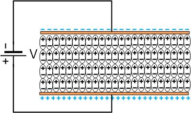
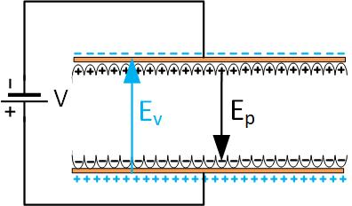
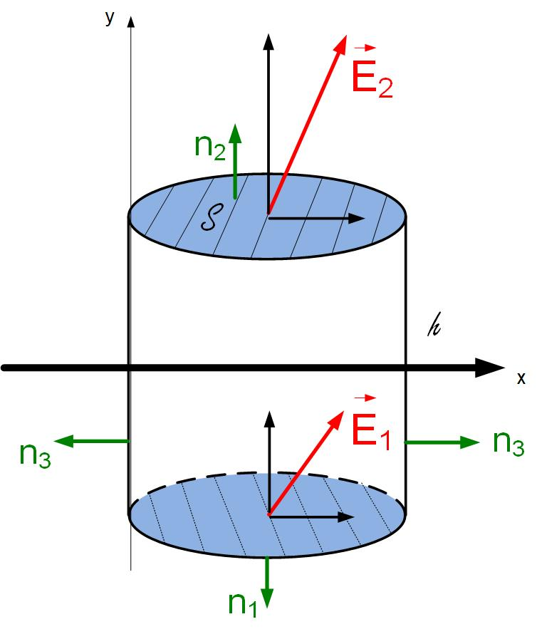
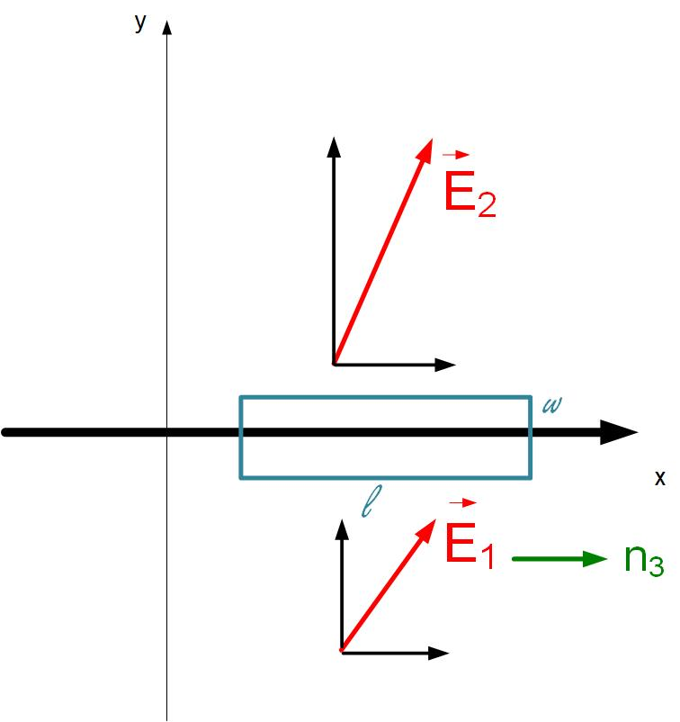

and and and and

Figure 5: Boundary Conditions for Electric Field.
Conductors conduct current well because the atoms of good conductors have many loosely bound electrons that can leave the atoms in the presence of an external electric field. In the absence of an external electric field, a piece of metal is shown in Figure fig:Conductor on the left. When there is no electric field, the electrons are close to the nucleus. On the right, the same metal piece is placed in an electric field of the battery. Under the influence of the external field, , electrons can freely move away from the atoms in the direction opposite to the direction of the external field. This type of current is called conduction current. The point form of Ohm’s law states that , where J is the current density, E is the electric field, and is the conductivity of the material. Conductors have very high conductivity, and so the electric field inside the conductors is zero.
In electrostatics, we assume that the charges are not moving, so there is no conduction current. The electric field inside the conductors is zero. As we will see later in this section, the charges on the conductor in electrostatic fields can exist only on its surface, and the vector of the electric field must be perpendicular to the surface of the metal. The tangential electric field is zero. All points on a conductor in electrostatic fields have the same potential, and so the conductor is an equipotential surface.
As shown in Figure fig:Dielectric1, in dielectrics, in the absence of an electric field, the electrons are close to the nucleus. The difference here is that the electrons are tightly bound to the nucleus, and they cannot escape in the presence of an electric field. When a battery establishes electric field inside the dielectric, the atoms of the dielectric stretch because the nucleus is pulled in the direction of the field, and electrons in the opposite direction and the atom can be represented by a dipole. On the other hand, the free electrons in the wire connected to the dielectric start bunching up on top of the dielectric piece, and the dipole’s positive charge is attracted to electrons. The negative dipole’s bound charge pushes electrons away from the bottom conductor. Looking from the outside, the current flows, but the electrons are not flowing through the dielectric. This type of current is called a displacement current. If the battery is removed, the free negative and positive charges are trapped on the top and bottom of the dielectric piece.
The electrons in the metal on top of the dielectric establish an electric field across it, as shown in Figure fig:Dielectric2. This field, in turn, produces electric dipoles in the dielectric, as explained above. The internal positive and negative charges cancel each other, and the positive bound charge from the dielectric on top and negative on the bottom produce their own field, which is in the opposite direction from the external field, as shown in Figure fig:Dielectric3.


The total field in the dielectric is the sum of the electric fields from free charges on top and bottom metal pieces , and the electric field from the separated polarization charges of the dielectric , as shown in Equation eq:sumfield. The induced field is a fraction of the external field, and we can represent it in terms of the external field as , where is some constant. We can then express the total field as a fraction of the external field in Equation eq:sumfield1.
Relative dielectric permittivity of the material is defined as . Therefore the total field inside the dielectric is lower than if no dielectric is present.
Dielectric permittivity of a material is defined as the relative permittivity multiplied by the permittivity of free space .
Relative dielectric constant is in general a complex number .
in data sheets is called a dielectric constant, or design dielectric constant, and it varies from 1 in the air to 13 in GaAs. An outlier is a dielectric constant of distilled water, .
We can sketch the complex relative dielectric constant on a complex plane. The angle between the magnitude of the dielectric constant and the x-axis is called , and it is used to describe the losses in the dielectric material. In datasheets for PC boards, you can see that is from about 0.001 for microwave substrates, such as Rogers Duroid, to 0.02 for low-frequency FR4 substrates.
In many electrical structures, more than one dielectric is used so that the electric field exists in different dielectrics. In such cases, we are interested in how will the electric field change from one dielectric to the other. Figure fig:BoundaryCondition shows the boundary between the two dielectrics with permittivities and , and the electric fields in material 1 and in material 2. At the boundary between two materials, we may have surface charge density .
At the boundary between any two dielectrics, the tangential components of the electric field are continuous, and the normal components are discontinuous and equal to the surface charge density.
If the free surface charge density at the boundary is zero, then the normal components of the electric field at the boundary are
We can also write electric flux density vectors at the boundary. Since and , the above equations can be re-written as
The electric field inside perfect conductors is zero. Ohm’s law states that
When , from the above equation, we see that the electric field is zero. This means that at the boundary of the dielectric and metal, the tangential field in the dielectric must be zero as well, and the only field at the boundary of a metal is the normal electric field , and it is equal to the induced charge at the surface of the conductor.
Figure fig:BoundaryConditionMetal shows the field at the boundary of the metallic sphere. Watch this demonstration of separation of charges on a metallic sphere in the electric field of the VanDenGraaff generator.
The electric field is zero inside the closed metallic conductor, even if the conductor is hollow, as shown in Figure fig:HollowConductor, and no charge is induced inside a metallic shield. This is Faraday’s cage.
Watch a demonstration of zero electric fields, and no charge, inside a hollow conductor by Prof Emeritus of MIT Walter Lewin.
In Figure fig:HollowConductor1, we introduce a charge inside a hollow conductor, and the electric field forms inside the conductor. The charge in the metallic shell will redistribute so that the field is zero inside the metal. The charge on the surface of the conductor will be uniformly distributed, regardless of the position of the charge inside the hollow part.
Figure fig:HollowConductor2 shows a grounded hollow conductor with a charge inside it. In this case, the positive charge on the outside of the conductor will attract negative charges from the ground that neutralize the positive charge inside the shell, so there will be no field outside the shell.
Watch a demonstration of Faraday’s Cage by Prof Emeritus of MIT Walter Lewin. He will enter the Faraday’s Cage with a tinsel, a transmitter (his wireless microphone that likely works at a frequency of a few GHz), and a receiver (a radio that works at a couple of hundred Megahertz frequency). The Faraday’s cage is likely not grounded. He cannot receive the radio signal as the outside radio waves cannot enter the Faraday’s cage, but the waves his microphone transmitter generates inside the cage still reach the receiver that is placed somewhere in the classroom since the cage is not grounded.
We will now use Maxwell’s equations to derive the electrostatic boundary conditions.
First, we will use Gauss’s law to find the normal component of the fields at the boundary between two dielectrics, as shown in Figure fig:BoundaryConditionNormal. As we can see from the figure, the flux of the electric field exists through both bases and the side of the cylinder. We can find the components of the fields in both dielectrics, one parallel to the boundary x and one perpendicular to the boundary, in the direction of y.
The tangential components of the fields produce flux through the sides, and normal components produce flux through the bases. Since we are interested in what happens at the boundary, we will let the height of the cylinder be infinitesimally small . Because the height of the cylinder is zero, and therefore the surface area is zero, the flux through the side surface S3 is zero. The flux through the top and bottom surfaces will only exist due to the normal components of the field.

The tangential components of the field can be obtained from the equation for Faraday’s law for static fields, as shown in Figure fig:BoundaryConditionTangential. We choose a rectangular contour, as shown in the figure with length l and width w. Since again we are interested in the boundary, we will let the width of the contour go to zero. The integral along the w-pieces will then be zero. The integral along the l-pieces of contour will depend on the orientation of contour, and we will pick a counter-clockwise path. Because of the counter-clockwise path, the x-component of the field will be negative, and we have that the x-components of the fields in two dielectrics have to be the same.

Theshape of the conductive material impacts the chargde distribution and charge density, as shown in Figure fig:sharpEdge. We can see that the charge distribution and electric field on round objects are uniform. The highest charge density and strongest electric fields are produced on sharp edges of condutive bodies.
Demonstration of higher charge density near sharp edges by Prof. Emeritus at MIT, Walter Lewin.